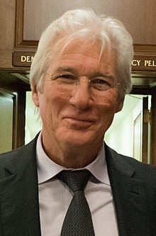

From Wikipedia, the free encyclopedia
Richard Tiffany Gere (/ɡɪər/ GEER;[1][2] born August 31, 1949) is an American actor. He began in films in the 1970s, playing a supporting role in Looking for Mr. Goodbar (1977) and a starring role in Days of Heaven (1978). He came to prominence with his role in the film American Gigolo (1980), which established him as a leading man and a sex symbol.[3] His other films include An Officer and a Gentleman (1982), The Cotton Club (1984), Pretty Woman (1990), Sommersby (1993), Primal Fear (1996), Runaway Bride (1999), I'm Not There (2007), Arbitrage (2012) and Norman (2016). For portraying Billy Flynn in the musical Chicago (2002), he won a Golden Globe Award and a Screen Actors Guild Award as part of the cast.
Richard Tiffany Gere was born in Philadelphia on August 31, 1949,[4] the eldest son and second child of housewife Doris Ann (née Tiffany; 1924–2016) and NMIC insurance agent Homer George Gere (1922-2023).[5][6] His father originally intended to become a minister.[7] Gere was raised Methodist[8][9] in Syracuse, New York.[10] His paternal great-grandfather, George Lane Gere (1848–1932), changed the spelling of his surname from "Geer". One of his ancestors, also named George, was an Englishman who came from Heavitree and settled in the Connecticut Colony in 1638.[11] Both of Gere's parents were Mayflower descendants; his ancestors include Pilgrims such as John Billington, William Brewster, Francis Eaton, Francis Cooke, Degory Priest, George Soule and Richard Warren.[citation needed]
In 1967, he graduated from North Syracuse Central High School, where he excelled at gymnastics and music and played the trumpet.[7] He attended the University of Massachusetts Amherst on a gymnastics scholarship, studying philosophy; after two years, he left and did not graduate.[7][12]Gere first worked professionally at the Seattle Repertory Theatre and the Provincetown Playhouse on Cape Cod in 1969, where he starred in Rosencrantz and Guildenstern Are Dead. His first major acting role was in the original London stage version of Grease, in 1973.[7] He was one of the first notable Hollywood actors to play a homosexual character, starring as a gay Holocaust victim in the 1979 Broadway production of Bent, for which he earned a Theatre World Award.
Gere began appearing in Hollywood films in the mid-1970s. Originally cast in a starring role in The Lords of Flatbush (1974), he was replaced after fighting with his co-star Sylvester Stallone. He played a small but memorable part in Looking for Mr. Goodbar (1977) and starred in director Terrence Malick's well-reviewed drama Days of Heaven (1978).[7] The crime drama American Gigolo (1980) significantly boosted his profile and the romantic drama An Officer and a Gentleman (1982) (co-starring Debra Winger) cemented Gere's ascent to stardom, grossing almost $130 million[13] and winning two Academy Awards out of six nominations;[14] Gere himself received his first Golden Globe Award nomination.[15] For the remainder of the 1980s, Gere appeared in films of varying critical and commercial reception.[16][17] His career rebounded with the releases of Internal Affairs (1990) and Pretty Woman, the latter of which earned him his second Golden Globe Award nomination.[18] The 1990s saw Gere star in successful films including Sommersby (1993) (opposite Jodie Foster), Primal Fear (1996) and Runaway Bride (1999) (which reunited him with his Pretty Woman co-star Julia Roberts).[16] He also took a leading role in the action thriller The Jackal (1997), playing former IRA militant Declan Mulqueen; Gere affected an Irish accent for the role.[19]
Gere was named People magazine's "Sexiest Man Alive" in 1999. Not long thereafter, all in the same year, he appeared in the hit films The Mothman Prophecies (2002), Unfaithful (2002) and the Academy Award-winning musical film adaptation Chicago (2002),[7] for which he won his first Golden Globe Award. Gere's ballroom dancing drama Shall We Dance? (2004) was also a solid performer that grossed $170 million worldwide.[20] His next film, the book-to-screen adaptation Bee Season (2005), was a commercial failure.[21] Gere went on to co-star with Jesse Eisenberg and Terrence Howard in The Hunting Party (2007), a thriller in which he played a journalist in Bosnia. He next appeared with Christian Bale, Heath Ledger and Cate Blanchett in Todd Haynes' semi-biographical film about Bob Dylan, I'm Not There (2007); Gere was one of six actors to portray a variation of Dylan. He co-starred with Diane Lane in the romantic drama Nights in Rodanthe (2008). The film was widely panned by critics[22] (making #74 on The Times Worst Films of 2008 list),[23] but grossed over $84 million worldwide.[24] The film is his most recent to have been produced entirely by a major film studio.
Gere has expressed a belief that his politics regarding China, an important financial resource for major Hollywood studios, have made him unwelcome within Hollywood.[25] He embraced his apparent exile from Hollywood and instead appeared in independent films that garnered some of the best reviews of his career.[17] He was notably singled out for portraying businessman Robert Miller in Arbitrage (2012), earning his fourth Golden Globe Award nomination. Among many positive reviews,[26] Peter Travers of Rolling Stone cited Gere's performance as "too good to ignore" and "an implosive tour de force".[27] Lou Lumenick of the New York Post further wrote that he "gives the best performance of his career".[28] Also in 2012, he received the Golden Starfish Award for Lifetime Achievement from the Hamptons International Film Festival and the Career Achievement Award from the Hollywood Film Awards.[29][30] He had earlier received an award from the 34th Cairo International Film Festival in December 2010.[31]
Gere made a notable departure from his traditional screen persona with Joseph Cedar's political drama Norman (2016). The film saw him portray Norman Oppenheimer, a small-time Jewish fixer. Gere himself described the character as an embodiment of the "sides of us we know are annoying and needy".[32] His portrayal of Oppenheimer was called "consistently, completely fascinating" by RogerEbert.com[33] and was singled out as a worthy Academy Award contender by Variety.[34]
Gere is an accomplished musician, composing and performing the Pretty Woman piano theme and a guitar solo in Runaway Bride. He learned tap dance for his role as lawyer Billy Flynn in Chicago,[35] and karate for An Officer and a Gentleman.[36]
Multiple film critics and media outlets have cited Gere as one of the best actors never to have received an Academy Award nomination.[37][38]
